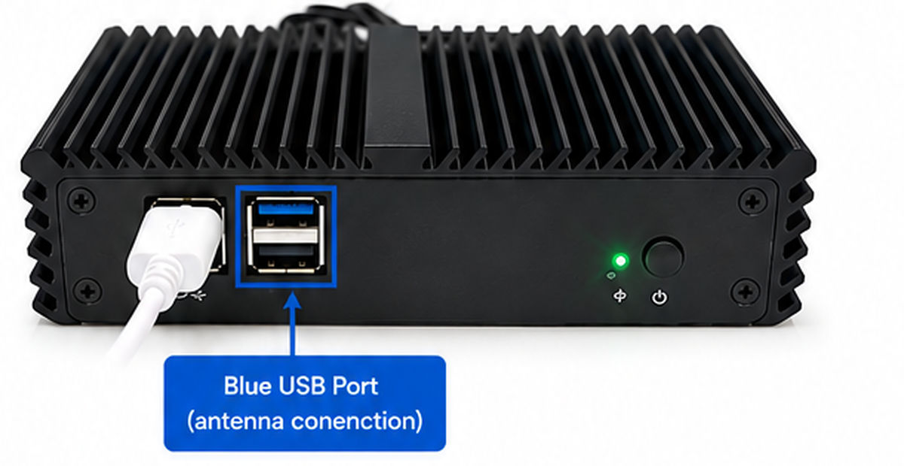
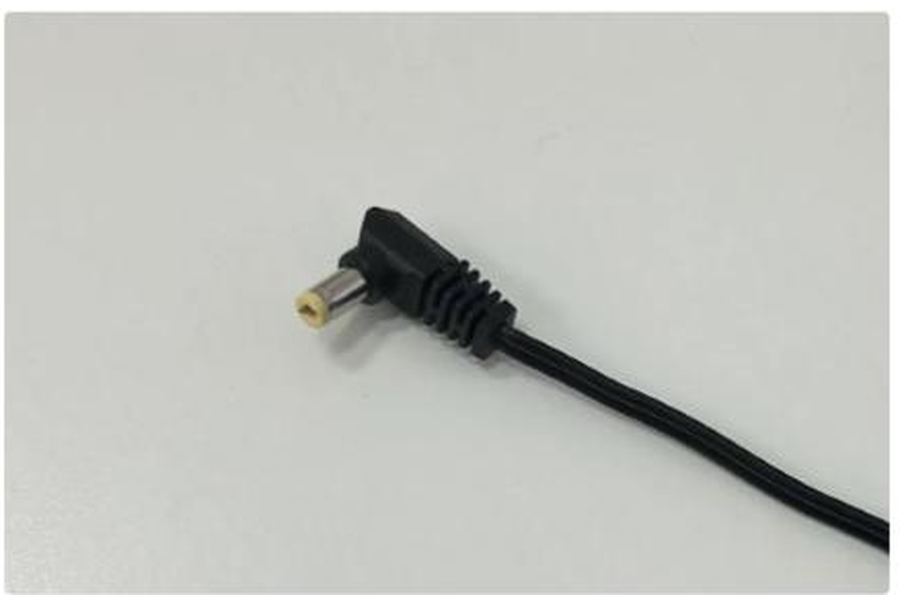
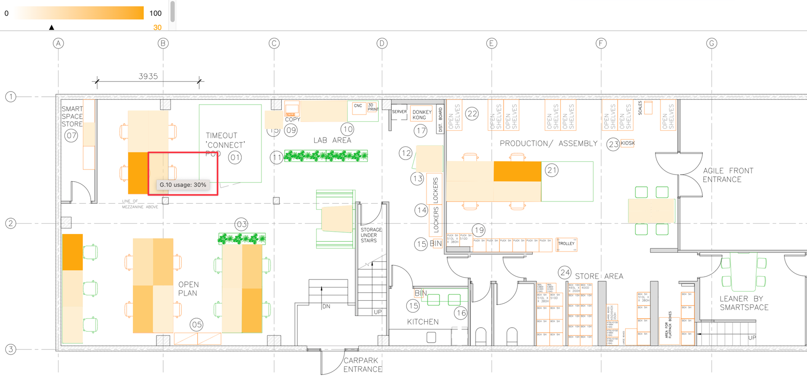
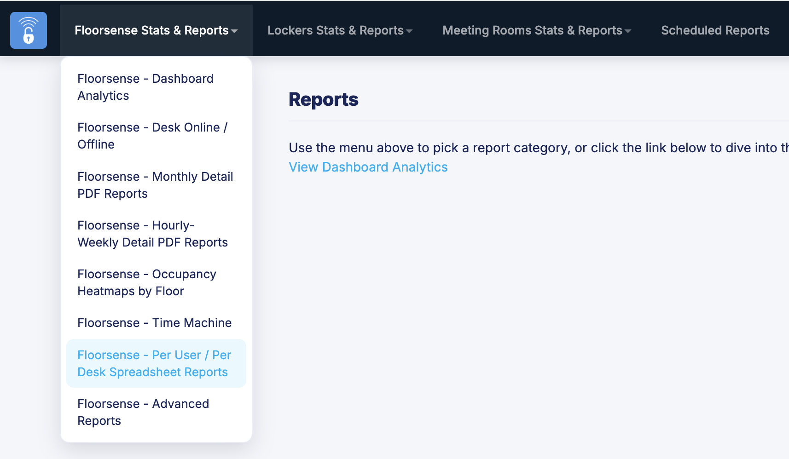
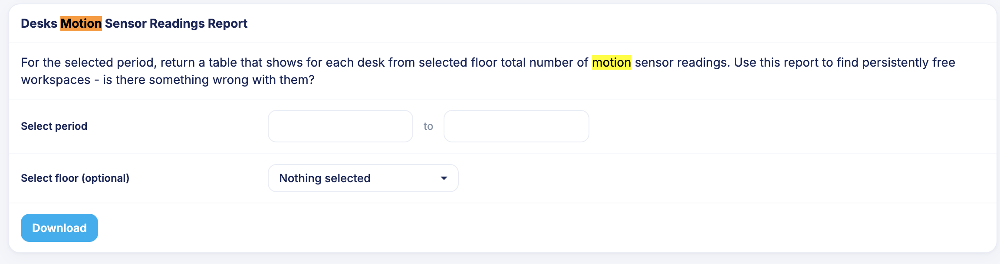
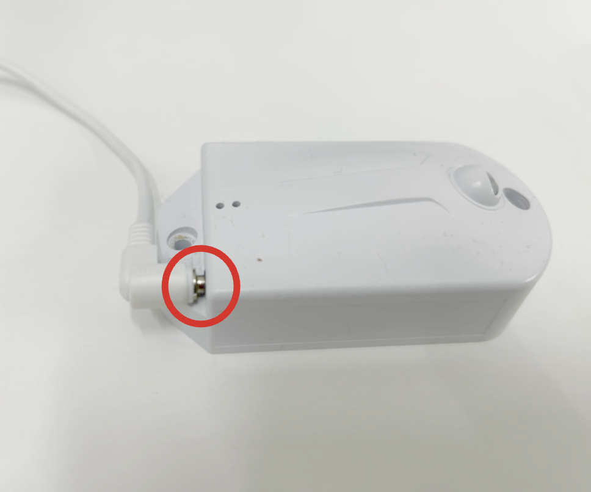
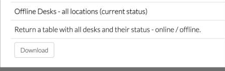

Troubleshooting Wizard
What's the reported issue?
Select a symptom below to start guided desk diagnostics.
← Choose a different system

Hover an issue above to preview it here — or tap the image to open it
← All issues
Symptom: A group of desks appears Offline, even though the pucks/handsets are powered on and properly connected.
Offline desks appear greyed out on the floor plan (circled above) in the mobile app — tapping one of these desks shows its status as offline.
1. Radio Antenna
The radio antenna is a small black device labelled "Floorsight Display Radio Unit."
2. Floorsense Controller

This is the controller that the radio antenna connects to.
- ✓ Checked
- ✓ Checked
- ✓ Checked
- ✓ Checked
- ✓ Checked
- ✓ Checked
Note: This process only restarts the radio antenna. It does not reboot the controller or affect any system settings.
Expected Result: The radio antenna will restart, the controller will reconnect automatically, and all desks should return online within 1–2 minutes.
Tip: If the desks are still offline after 2 minutes, check that the USB cable is fully seated in the blue USB port.
Important: Only unplug the USB cable connected to the radio antenna. Do not disconnect the controller's power cable.
Escalation Criteria: If desks remain offline after confirming the cable is fully seated and waiting the full 1–2 minute reconnect window, escalate to Floorsense technical support for radio antenna / controller diagnostics.
← Handset/Display Screen Issues
Tap the screen to activate it and return to the home screen.
Expected Result: The handset returns to its normal home screen, showing the desk number.
← Handset/Display Screen Issues
Symptom: The handset is showing the blue "Floorsight Handset" info screen (hardware, boot and build version, serial number, radio version) instead of its normal home screen.
- ✓ Checked
Expected Result: The handset returns to its normal home screen, showing the desk number.
← Handset/Display Screen Issues
Symptom: The handset is showing the bootloader screen (hardware, application and radio details) instead of starting up normally.
- ✓ Checked
Expected Result: The handset returns to its normal home screen, showing the desk number.
← Handset/Display Screen Issues
Symptom: The handset shows a large "X" and won't respond — this means it's disconnected or not configured.
- ✓ Checked

The power jack connects to the back of the handset.
Escalation Criteria: If the handset still shows an "X" screen after power cycling, email support@smartalock.com with the site name, desk number, and the troubleshooting steps already completed.
Expected Result: The handset returns to its normal home screen, showing the desk number.
← All issues
Desk Analytics Charts View — selecting a desk shows its full usage breakdown, including Total Usage and the individual occupancy ratios.
Find Malfunctioning Sensors
Symptom: Sensors that may require attention will show very few or no readings over a long period of time. A desk stuck at 0% usage, or just as alarming, stuck at 100% usage in the latest report, is a particularly strong signal.
Option 1: Floorplan Heatmap (Desk Analytics)

The Floorplan View heatmap, found under Analytics → Desk Analytics in the admin portal — desk shading shows occupancy, and hovering a desk shows its exact reading.
- Open Desk Analytics: As an administrator, log into the admin portal and go to the Analytics tab, then the Desk Analytics submenu. Use the toggle button in the top-right corner to switch from Charts View to Floorplan View.
- Select a Floor: As with Charts View, choose the floor to inspect from the left pane.
- Choose the Period: Use the Daily, Weekly, or Monthly tabs in the top-left to set the reporting period.
- Read the Heatmap: Each desk is shaded by its occupancy percentage. Hover over a desk to update the indicator at the top of the heatmap — this changes both the occupancy percentage shown and the colour intensity, with a darker colour indicating higher occupancy.
Option 2: Desks Motion Sensor Readings Report

Floorsense Stats & Reports → Floorsense - Per User / Per Desk Spreadsheet Reports.
- As an administrator, log into the admin portal and go to the Analytics tab, then select the Reports submenu.
- Open it via Floorsense Stats & Reports → Floorsense - Per User / Per Desk Spreadsheet Reports.
- Search for "Desks Motion Sensor Readings Report".

The report form — set a date range (and optionally a floor), then Download.
Note: There's currently no automatic notification when a sensor needs attention, so it's worth checking this report periodically rather than waiting for a complaint.
Possible Reasons for No Readings
If a sensor has no readings in the report, it could mean:
- The desk hasn't been used during the period you've selected.
- The sensor is disconnected or not fully plugged in.
- The sensor needs to be rebooted (unplug and plug back in).
- The sensor may be faulty (rare).
- Readings exist but are consistently too low to count as occupied (less than 50) — the sensor is likely mounted too far from the user and will need to be reinstalled closer.

The audio jack connector on the motion sensor — this is what needs to be fully unplugged and reseated.
- Resolution — Reseat the Audio Jack: Unplug the sensor's audio jack completely, then reconnect it all the way in — there should be no visible gap at the connector. Stay at the desk for 3–5 minutes afterward to give the sensor time to reconnect and start reporting again.
- Verify: Check the desk Event Log to confirm the sensor is reporting again, or note the desk number and have your Floorsense administrator verify it afterward.
Expected Result: After reseating the audio jack, the sensor resumes reporting readings within a few minutes and the desk event log shows normal activity.
Escalation Criteria: If the sensor still shows few or no readings after reseating the audio jack and waiting the full 3–5 minutes, escalate to Floorsense technical support with the site name, desk number, and the Desks Motion Sensor Readings Report showing the affected sensor.
← All issues
Symptom: Offline pucks/handsets are visually represented on the floor plan as pale/transparent icons, making them easy to identify at a glance.
An offline puck/handset shows as a pale, washed-out icon on the floor plan (circled above) instead of the normal solid colour.
Offline Desks Report
Floorsense Stats & Reports → Floorsense - Per User / Per Desk Spreadsheet Reports.
- As an administrator, log into the admin portal and go to Settings, then System Configuration.
- On the page that opens, select Stats & Reports, then Floorsense - Per User / Per Desk Spreadsheet Reports.
- Look for the "Offline Desks" report — it returns a table of all desks and their current status (online / offline).

The Offline Desks report — download it to see the current online/offline status of every desk.
- Resolution — Reconnect Cables: Reconnect all cables connected to the puck/handset. Unplug each cable, then plug it back in firmly, checking for any loose connections or visible damage to the cables or connectors.
Expected Result: The puck/handset reconnects and its icon on the floor plan returns to its normal solid colour, and the Offline Desks report shows it as online.
Escalation Criteria: If the puck/handset still shows offline after reconnecting all cables and checking for damage, escalate to Floorsense technical support with the site name, desk number, and the Offline Desks report showing the affected desk.
Success: The issue has been addressed or diagnostic steps completed.